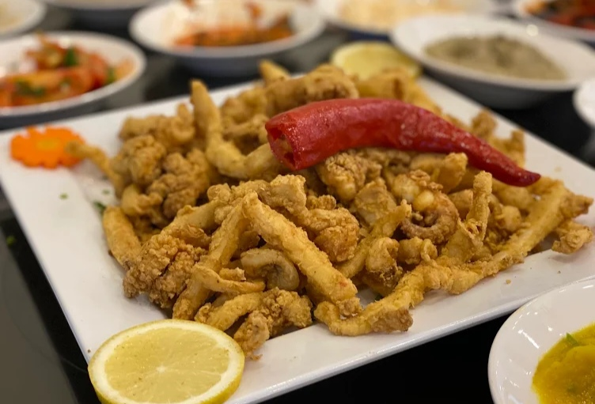
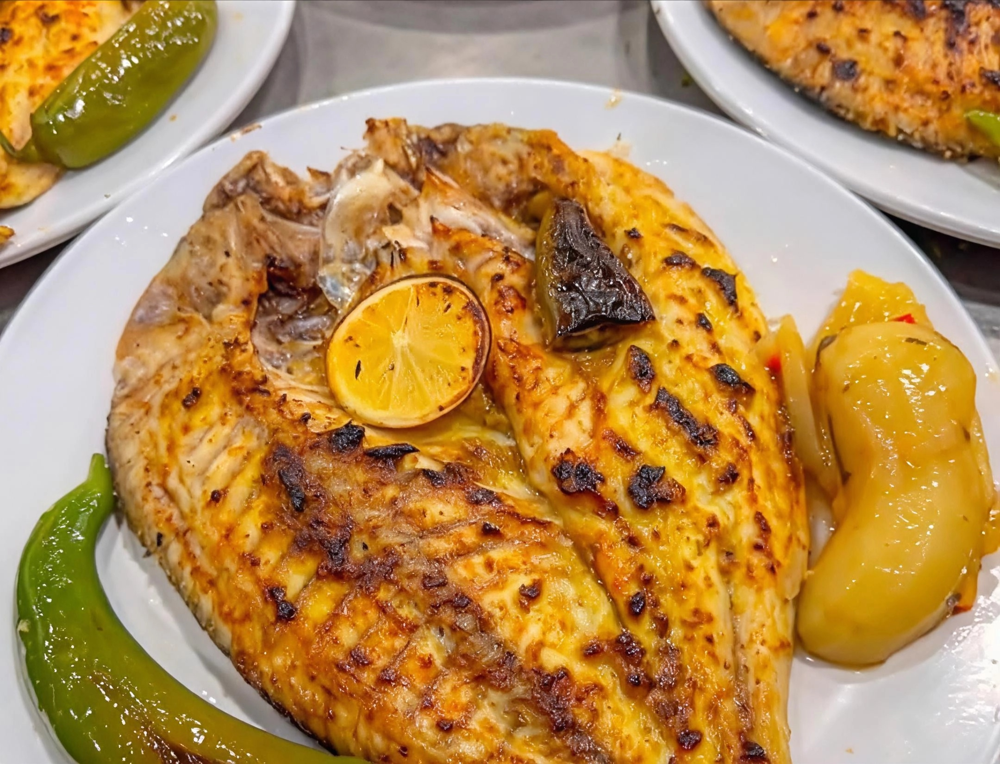
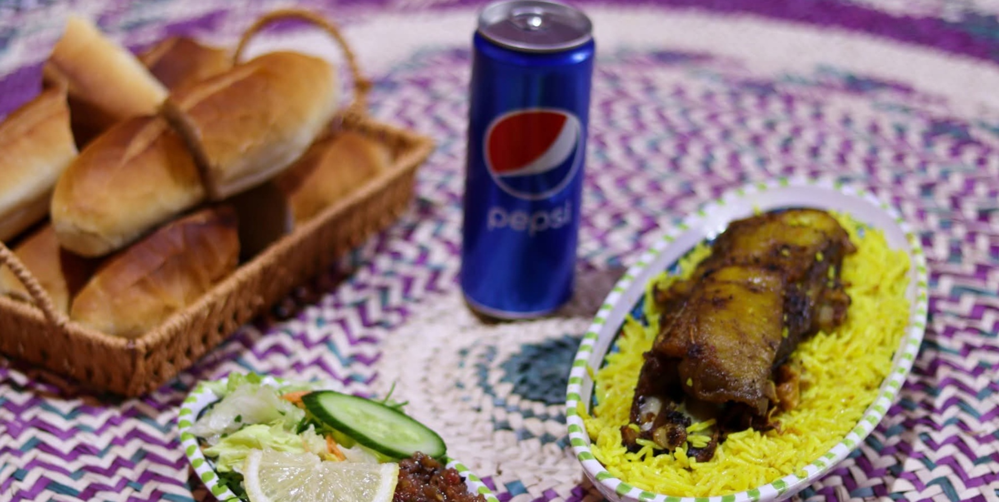
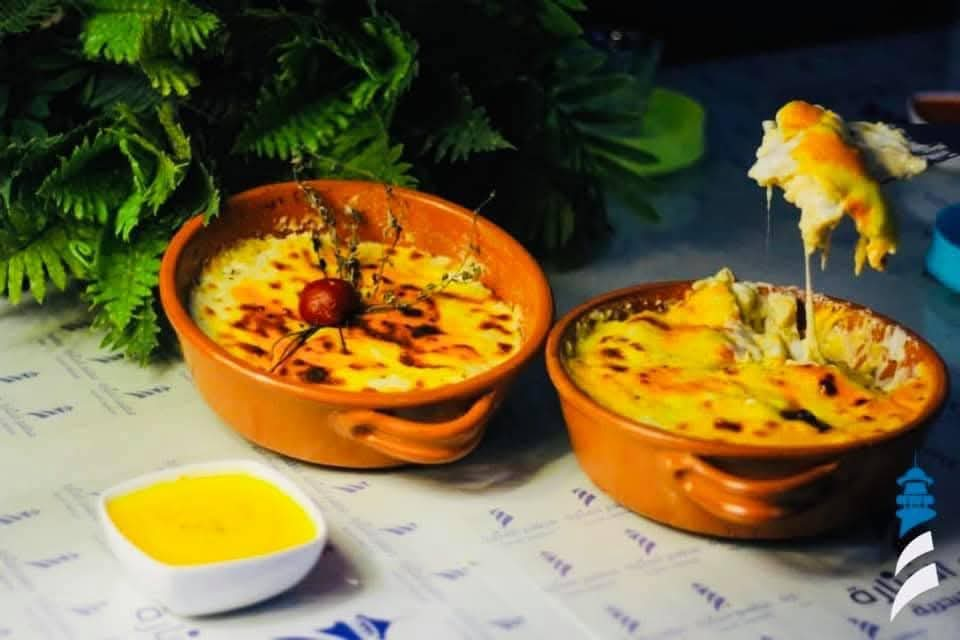
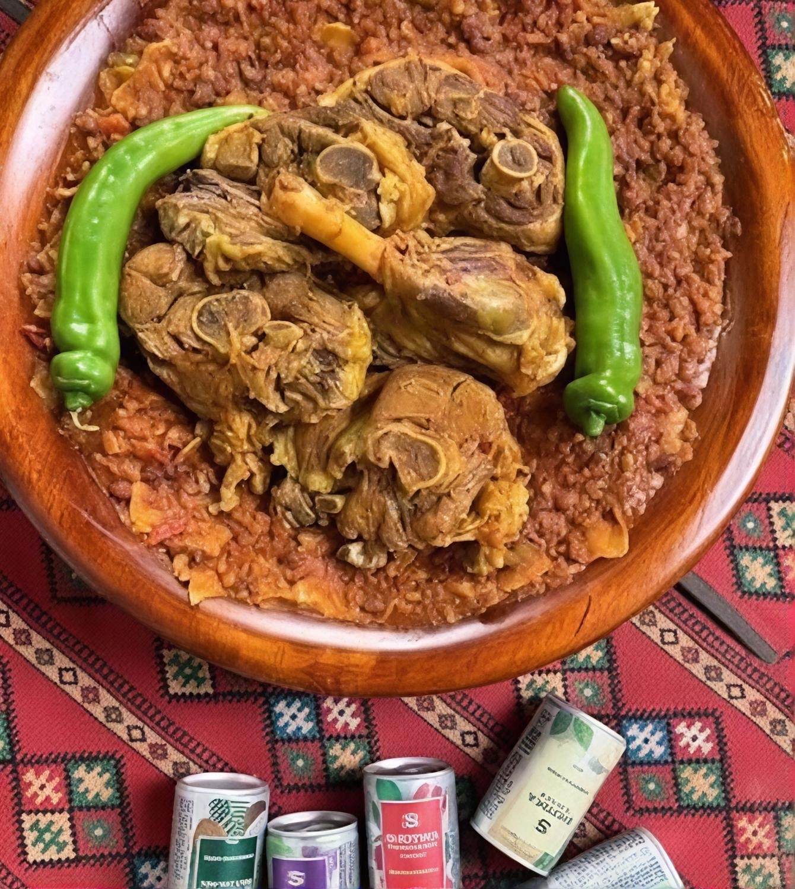

Famous Libyan Restaurants
Your guide to the best restaurants and cuisine across Libya's cities.
Your guide to the best restaurants and cuisine across Libya's cities.

Tripoli's most famous traditional Libyan restaurant, serving Libyan couscous, bazin, and authentic local dishes in a traditional setting.
+218 21 333 4444 | 12 PM - 11 PM
A modern restaurant serving contemporary Libyan and international cuisine, with elegant design suited to families.
+218 21 444 5555 | 1 PM - 12 AM

An upscale restaurant with a stunning sea view, serving fresh seafood and grills.
+218 21 555 6666 | 12 PM - 11 PM

A modern restaurant right on the seafront, serving fresh seafood and international dishes.
+218 61 222 3333 | 12 PM - 12 AM

Specialises in fresh seafood dishes, known for its sea bass, grilled shrimp, and seafood soup.
+218 61 333 4444 | 11 AM - 11 PM

Serves Middle Eastern and Andalusian cuisine in a luxurious Andalusian-style setting, with live music and excellent service.
+218 61 444 5555 | 1 PM - 12 AM

A local-cuisine restaurant offering a variety of fresh dishes and grills with a lovely view.
+218 51 222 3333

A traditional restaurant with a stunning mountain view, serving highland dishes and local specialities in natural surroundings.
+218 81 333 4444

Traditional Saharan dishes with authentic Libyan flavour. A unique dining experience in a desert setting.
+218 41 555 6666